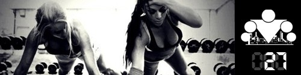
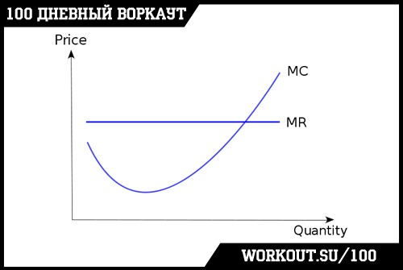
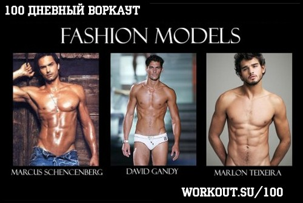
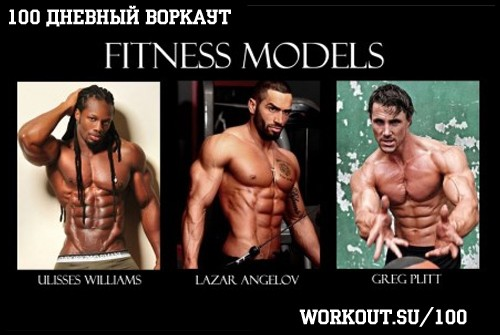
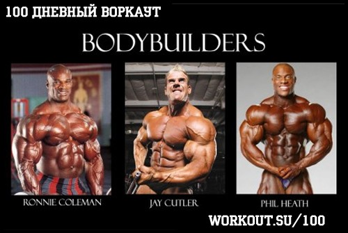

100 Дневный воркаут
<==== Вернуться к оглавлению
День 27. Результаты тренировок: желаемые и достижимые

Как говорится - нет предела совершенству, но в свете последних инфо-постов, я думаю, что многим будет интересно узнать ответ на вопрос о том, как определить, достигли они уже оптимального для себя результата или ещё находятся в процессе. Для ответа на этот непростой вопрос я воспользуюсь силой экономической теории, в той части, которая посвящена предельным издержкам.
Одна из первых вещей, о которых рассказывают в курсе Микроэкономики - это предельные издержки (Marginal Cost). Если говорить простым языком, то это издержки, приходящиеся на каждую дополнительную произведённую единицу продукции. Согласно экономической теории, продолжать производство продукции имеет смысл до тех пор, пока предельные издержки меньше цены продажи единицы продукции. Если стоимость производства ниже цены, мы получаем прибыль, если равна цене, мы захватываем рынок (без прибыли), если выше цены, то мы захватываем рынок, но теряем деньги (если нам удастся продать, в противном случае теряем больше денег). Здесь самым важным моментом, на который необходимо обратить ваше внимание является тот факт, что предельные издержки на производство (в стандартном виде функции) сначала снижаются, затем стабилизируются на определённом уровне, а затем начинают очень быстро расти. Давайте взглянем на типичный график, иллюстрирующий эту ситуацию:

В инфо-посте
про образ жизни
yerofea
писала о том, что наш внешний вид является следствием того образа жизни, который мы ведём. Наш образ жизни - это совокупность действий, которые мы регулярно выполняем. Поели, поработали, потренировались, поспали, снова поели и так далее. Однако, для того, чтобы хорошо выглядеть, нужно не просто есть всё подряд, а есть определённую еду, да и навряд ли удастся набрать хорошую мышечную массу и привести тело в форму вяло вышагивая на беговой дорожке. То есть к питанию и тренировкам тоже нужен свой подход.
К чему я веду? Давайте представим всех людей в виде континуума. На одном конце которого я предлагаю разместить людей вообще не занимающихся своим здоровьем. Они ничего не знают про белки, жиры, углеводы, не тратят время на занятия спортом и как выглядят, так и выглядят, кто-то лучше, кто-то хуже, но в общем в их жизни нет места воркауту и диетам. На другом конце у нас будут бодибилдеры и фитнес модели, которые поражают наше воображение на фотографиях и обложках журналов. Их диета расписана если не по минутам, то по часам точно, они тратят огромные деньги на различные добавки, они тренируется каждый день, иногда даже 2 раза в день и это даёт свои результаты. Но в итоге вся их жизнь посвящена тому, чтобы отлично выглядеть. Ну а между этими двумя крайностями находятся все остальные люди, и мы с вами в том числе.



Одна из целей нашей обучающей программы
100 дневный воркаут
(как, в общем-то, и всего воркаута) - показать людям, что можно стать более сильными, здоровыми и красивыми благодаря регулярным тренировкам с использованием веса собственного тела в качестве нагрузки и разумному подходу к питанию. Никаких дорогих фитнес клубов, никаких персональных тренеров, никаких добавок, никаких жёстких диет и приёмов пищи по часам. Максимально просто, максимально доступно, максимально интересно и максимально эффективно. Я уже не раз приводил примеры
тех результатов
, которых добиваются люди, занимающиеся воркаутом (и не являющиеся профессиональными спортсменами!). И прелесть этих результатов в том, что, с одной стороны они действительно хороши, а с другой - вы тоже можете достигнуть таких же! Ну или примерно таких же.
Весь вопрос заключается в том, как много времени и сил вы готовы уделять этому процессу. Естественно, чем больше, тем лучше будут ваши результаты, но при этом следует понимать, что вам придётся чем-то жертвовать, внося коррективы в свой образ жизни. После окончания
100 дневного воркаута
вы достигнете определённого уровня, и у вас сформируется привычка к тренировкам. Дальше, если вы будете удовлетворены достигнутым уровнем, вам останется только поддерживать его. Если же вы захотите чего-то большего, вам необходимо будет осуществить дополнительные усилия (более строгая диета + больше тренировок + меньше расслабона). И чем более существенного результата вы захотите достичь, тем больше усилий потребуется (вспоминаем про предельные издержки), при чём эти усилия будут давать всё меньшую и меньшую отдачу.
Таким образом, какой результат считать оптимальным каждый определяет для себя сам.
======> День 28. Правила управления временем